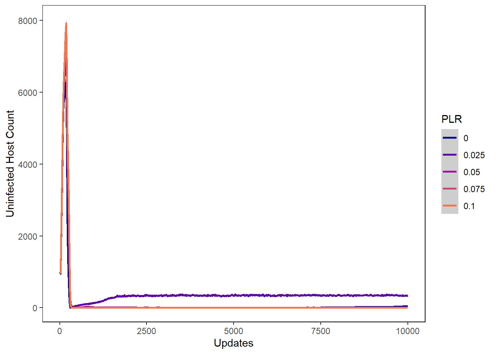
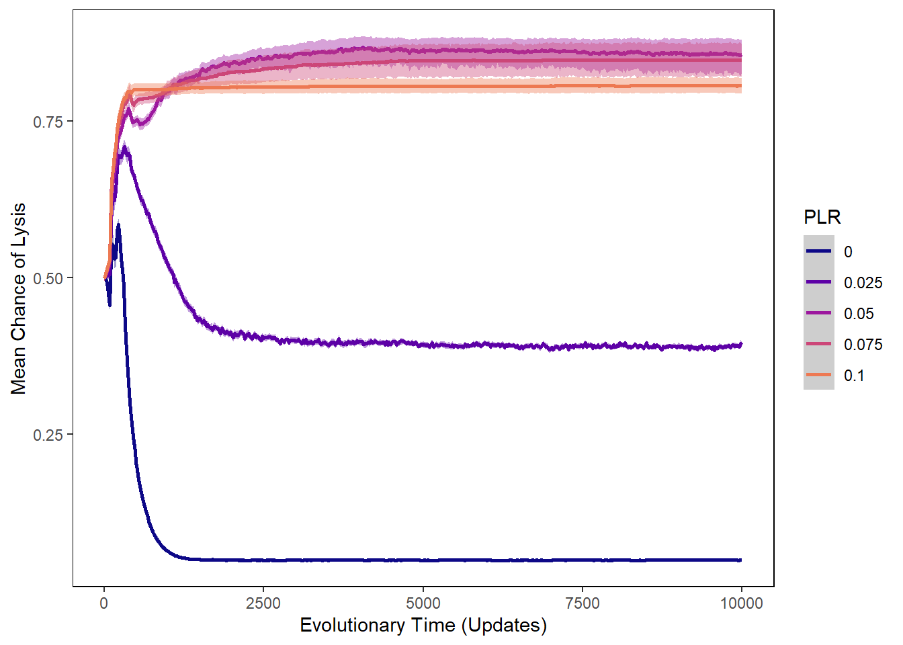
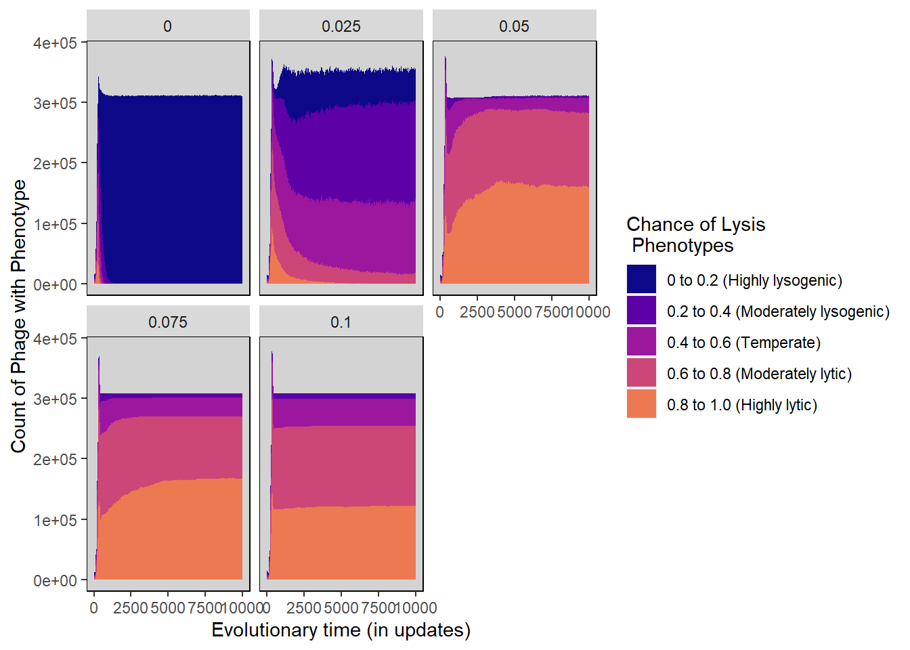

Chapter 5 Prophage Loss Rate Parameter Sweep
The following includes the R scripts that we used to generate our graphs for the data where there we did a parameter sweep on the Prophage Loss Rate to determine which values to use in the remainder of our experiments. There was no induction and no direct benefit for hosts with lysogenic phage.
5.1 Gather Settings and Treatments
General settings
plr_folder <- "Data/PLR_parameter_sweep/" #Folder where datafiles are
plr_treatments <- c("PLR") #Names of the treatments being tested - should match what is in filenamesStacked histogram settings
lysis_separate_by <- "PLR" #Facet wrap lysis chance stacked histogram by Prophage Loss Rate
#How lysis chance stacked histogram bins should be collapsed and renamed
lysis_histogram_bins <- c(Hist_0.0 = "0 to 0.2 (Highly lysogenic)",
Hist_0.1 = "0 to 0.2 (Highly lysogenic)",
Hist_0.2 = "0.2 to 0.4 (Moderately lysogenic)",
Hist_0.3 = "0.2 to 0.4 (Moderately lysogenic)",
Hist_0.4 = "0.4 to 0.6 (Temperate)",
Hist_0.5 = "0.4 to 0.6 (Temperate)",
Hist_0.6 = "0.6 to 0.8 (Moderately lytic)",
Hist_0.7 = "0.6 to 0.8 (Moderately lytic)",
Hist_0.8 = "0.8 to 1.0 (Highly lytic)",
Hist_0.9 = "0.8 to 1.0 (Highly lytic)")5.2 Collect and Munge Data
Gather filenames
plr_all_filenames <- list.files(plr_folder)
plr_freeliving_filenames <- str_subset(plr_all_filenames, "FreeLivingSyms")
plr_hostval_filenames <- str_subset(plr_all_filenames, "HostVals")
plr_lysischance_filenames <- str_subset(plr_all_filenames, "LysisChance")
plr_phagevals_filenames <- str_subset(plr_all_filenames, "SymVals")Combine time series data for all subsets of datafiles
plr_freeliving <- combine_time_data(plr_freeliving_filenames, plr_folder, plr_treatments)
plr_hostvals <- combine_time_data(plr_hostval_filenames, plr_folder, plr_treatments)
plr_lysischances <- combine_time_data(plr_lysischance_filenames, plr_folder, plr_treatments)
plr_phagevals <- combine_time_data(plr_phagevals_filenames, plr_folder, plr_treatments)Rearrange time series data into stacked histogram data
plr_lysis_histdata <- combine_histogram_data(plr_lysischances,
lysis_separate_by,
lysis_histogram_bins)Extract information about average genome values at the end of the runs
plr_final_freeliving <- last_update(plr_freeliving)
plr_final_hostvals <- last_update(plr_hostvals)
plr_final_lysischances <- last_update(plr_lysischances)
plr_final_phagevals <- last_update(plr_phagevals)5.3 Analyze Data
5.3.1 Summary Stats
plr_lysis_summary_stats <- plr_final_lysischances %>%
group_by(PLR) %>%
summarise(final_chance_of_lysis = mean(mean_lysischance))
plr_lysis_summary_stats## # A tibble: 5 x 2
## PLR final_chance_of_lysis
## <fct> <dbl>
## 1 0 0.0488
## 2 0.025 0.392
## 3 0.05 0.856
## 4 0.075 0.847
## 5 0.1 0.8065.3.2 Wilcox tests
Compare PLR of 0 to PLR 5
bonferroni <- 8
plr_PLR0 <- subset(plr_final_lysischances, PLR == "0")
plr_PLR0.05 <- subset(plr_final_lysischances, PLR == "0.05")
wilcox.test(plr_PLR0$mean_lysischance, plr_PLR0.05$mean_lysischance)$p.value * bonferroni## [1] 3.437693e-175.4 Generate Graphs
5.4.1 Host graphs
Host count
hostcount_plot <- ggplot(data=plr_hostvals,
aes(x=update, y=count,
group=PLR, colour=PLR)) +
ylab("Host Count") + xlab("Updates") +
stat_summary(aes(color=PLR, fill=PLR),
fun.data="mean_cl_boot", geom=c("smooth"), se=TRUE) +
theme(panel.background = element_rect(fill='white', colour='black')) +
theme(panel.grid.major = element_blank(), panel.grid.minor = element_blank()) +
guides(fill="none") + scale_colour_manual(values=plasma(nlevels(plr_hostvals$PLR)+2)) +
scale_fill_manual(values=plasma(nlevels(plr_hostvals$PLR)+2))
hostcount_plotHost cfu count
hostcount_cfu_plot <- ggplot(data=plr_hostvals, aes(x=update, y=cfu_count,
group=PLR, colour=PLR)) +
ylab("Host CFU Count") + xlab("Updates") +
stat_summary(aes(color=PLR, fill=PLR),
fun.data="mean_cl_boot", geom=c("smooth"), se=TRUE) +
theme(panel.background = element_rect(fill='white', colour='black')) +
theme(panel.grid.major = element_blank(), panel.grid.minor = element_blank()) +
guides(fill="none") + scale_colour_manual(values=plasma(nlevels(plr_hostvals$PLR)+2)) +
scale_fill_manual(values=plasma(nlevels(plr_hostvals$PLR)+2))
hostcount_cfu_plotHost uninfected count
host_uninfected_plot <- ggplot(data=plr_hostvals, aes(x=update, y=uninfected_host_count,
group=PLR, colour=PLR)) +
ylab("Uninfected Host Count") + xlab("Updates") +
stat_summary(aes(color=PLR, fill=PLR),
fun.data="mean_cl_boot", geom=c("smooth"), se=TRUE) +
theme(panel.background = element_rect(fill='white', colour='black')) +
theme(panel.grid.major = element_blank(), panel.grid.minor = element_blank()) +
guides(fill="none") + scale_colour_manual(values=plasma(nlevels(plr_hostvals$PLR)+2)) +
scale_fill_manual(values=plasma(nlevels(plr_hostvals$PLR)+2))
host_uninfected_plot
Host int vals
hostvals_plot <- ggplot(data=plr_hostvals, aes(x=update, y=mean_intval,
group=PLR, colour=PLR)) +
ylab("Mean Host Interaction Value") + xlab("Updates") +
stat_summary(aes(color=PLR, fill=PLR),
fun.data="mean_cl_boot", geom=c("smooth"), se=TRUE) +
theme(panel.background = element_rect(fill='white', colour='black')) +
theme(panel.grid.major = element_blank(), panel.grid.minor = element_blank()) +
guides(fill="none") + scale_colour_manual(values=plasma(nlevels(plr_hostvals$PLR)+2)) +
scale_fill_manual(values=plasma(nlevels(plr_hostvals$PLR)+2))
hostvals_plot## Warning: Removed 31562 rows containing non-finite values (stat_summary).5.4.2 Phage graphs
Phage count
phagecount_plot <- ggplot(data=plr_lysischances,
aes(x=update, y=count,
group=PLR, color=PLR)) +
ylab("Phage count") + xlab("Updates") +
stat_summary(aes(color=PLR, fill=PLR),
fun.data="mean_cl_boot", geom=c("smooth"), se=TRUE) +
theme(panel.background = element_rect(fill='white', colour='black')) +
theme(panel.grid.major = element_blank(), panel.grid.minor = element_blank()) +
guides(fill="none") + scale_colour_manual(values=plasma(nlevels(plr_lysischances$PLR)+2)) +
scale_fill_manual(values=plasma(nlevels(plr_lysischances$PLR)+2))
phagecount_plotPhage int val
phageintval_plot <- ggplot(data=plr_phagevals, aes(x=update, y=mean_intval,
group=PLR, color=PLR)) +
ylab("Phage Interaction value") + xlab("Updates") +
stat_summary(aes(color=PLR, fill=PLR),
fun.data="mean_cl_boot", geom=c("smooth"), se=TRUE) +
theme(panel.background = element_rect(fill='white', colour='black')) +
theme(panel.grid.major = element_blank(), panel.grid.minor = element_blank()) +
guides(fill="none") + scale_colour_manual(values=plasma(nlevels(plr_phagevals$PLR)+2)) +
scale_fill_manual(values=plasma(nlevels(plr_phagevals$PLR)+2))
phageintval_plotChance of lysis
lysischances_plot <- ggplot(data=plr_lysischances,
aes(x=update, y=mean_lysischance,
group=PLR, color=PLR)) +
ylab("Mean Chance of Lysis") + xlab("Evolutionary Time (Updates)") +
stat_summary(aes(color=PLR, fill=PLR),
fun.data="mean_cl_boot", geom=c("smooth"), se=TRUE) +
theme(panel.background = element_rect(fill='white', colour='black')) +
theme(panel.grid.major = element_blank(), panel.grid.minor = element_blank()) +
guides(fill="none") +
scale_colour_manual(values=plasma(nlevels(plr_lysischances$PLR)+2)) +
scale_fill_manual(values=plasma(nlevels(plr_lysischances$PLR)+2))
lysischances_plot
Chance of lysis boxplot
plr_final_lysischances2 <- plr_final_lysischances %>%
filter(PLR %in% c("0", "0.025", "0.05"))
lysis_boxplot <- ggplot(data = plr_final_lysischances2,
aes(x = PLR, y = mean_lysischance,
group=PLR, color=PLR)) +
geom_boxplot(
width = .25,
outlier.shape = NA
) +
geom_point(
size = 1.3,
alpha = .3,
position = position_jitter(
seed = 1, width = .1
)
) +
coord_cartesian(xlim = c(1.2, NA), clip = "off") +
ylab("Mean Chance of Lysis") + xlab("Prophage Loss Rate") +
theme(panel.background = element_rect(fill='white', colour='black')) +
theme(panel.grid.major = element_blank(), panel.grid.minor = element_blank()) +
guides(fill="none") +
scale_colour_manual(values=plasma(5)) +
scale_fill_manual(values=plasma(5)) +
scale_y_continuous(labels = scales::percent) +
theme(legend.position = "none")
lysis_boxplot5.4.3 Stacked Histograms
Chance of lysis stacked histogram
lysischance_stackedhistogram <- ggplot(plr_lysis_histdata,
aes(update, count)) +
geom_area(aes(fill=Histogram_bins), position='stack') +
ylab("Count of Phage with Phenotype") + xlab("Evolutionary time (in updates)") +
scale_fill_manual("Chance of Lysis\n Phenotypes",values=plasma(nlevels(plr_lysis_histdata$Histogram_bins)+2)) +
facet_wrap(~treatment) +
theme(panel.background = element_rect(fill='light grey', colour='black')) +
theme(panel.grid.major = element_blank(), panel.grid.minor = element_blank()) +
guides(fill="none") + guides(fill = guide_legend())
lysischance_stackedhistogram